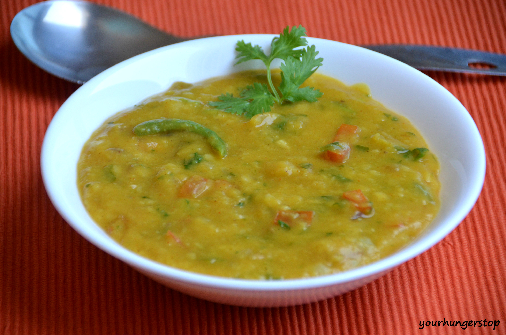

Dal Fry Recipe
INGREDIENTS
- 1 cup Tur dal
- 2 1/2 cups Water
- 1 cup finely chopped Onion
- 1 cup finely chopped Tomato
- 3~4 tbsp Ghee/li>
- 1/2 tsp Turmeric powder
- 1/2 tsp Hing / Asafetida
- 1 tbsp Coriander powder
- 1 tbsp Red chili powder
- Salt to taste
- Finely chopped Coriander leaves
- 8~10 Curry leaves
- 1/2 tsp Cumin seeds
- 1 tsp Garam masala
For Tempering
- Ghee
- Cumin seeds
- 1 tbsp finely chopped Garlic
- 2~3 Dried red chilies
- Red chili powder
INSTRUCTIONS
For Dal:
- Take the dal in pressure cooker and wash it really good.
- Add water, turmeric powder, hing and mix well.
- Close the lid and cook on medium heat until 5 whistles.
- Turn off the gas and let the cooker cool down completely.
- Beat the dal really good with a whisk and keep it aside.
- Heat up ghee on medium heat.
- Add cumin seeds and let it splutter.
- Add curry leaves and onion.
- Mix well and cook for about 5-6 minutes until onion turns light golden.
- Add tomato, coriander powder, garam masala, red chili powder and stir well.
- Cook for about 4-5 minutes until tomato is cooked well.
- Add dal and water to adjust the consistency.
- Mix well and add salt.
- Stir well and cook for about 4-5 minutes.
For Tempering:
- Heat up ghee in a tadka pan.
- Add mustard seeds and let them pop up.
- Add cumin seeds, garlic and cook for about a minute.
- Turn off the gas and add dry red chillies and mix well.
- Add red chili powder and mix well.
- Add this tadka on dal and garnish with coriander leaves.
- Add cumin seeds, garlic and cook for about a minute.
- Turn off the gas and add dry red chillies and mix well.
- Add red chili powder and mix well.
- Add this tadka on dal and garnish with coriander leaves.
- Dal tadka is already.Dal tadka is already.Dal tadka is already.
